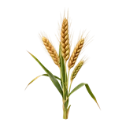

होम / गेहूं

गेहूं का भाव आज | Wheat Mandi Price Today
गेहूं के आज के उपलब्ध मंडी भाव देखें—श्रीगंगानगर, कोटा, जयपुर (बस्सी) और इंदौर के मॉडल, न्यूनतम और अधिकतम रेट।
नीचे मंडी-वार सूची में गेहूं के उपलब्ध भाव दिए हैं। मंडी के नाम पर क्लिक करके उस मंडी की दूसरी फसलों के भाव भी देख सकते हैं।
गेहूं का भाव आज कैसे चेक करें
मंडी भाव बदलता रहता है। गेहूं का उपलब्ध नवीनतम भाव देखने के लिए मंडी समिति के आधिकारिक पोर्टल या इस पेज की मूल्य तालिका में राज्य, ज़िला और मंडी के नाम से खोज करें।
- राज्य और मंडी का नाम चुनें।
- फसल की श्रेणी में गेहूं चुनें।
- न्यूनतम, अधिकतम और मॉडल भाव की तुलना करें।
राजस्थान, गुजरात, मध्य प्रदेश और हरियाणा में गेहूं का रेट क्यों अलग होता है
हर राज्य और मंडी में गेहूं का भाव अलग हो सकता है। इसके पीछे मंडी की दूरी, परिवहन, गुणवत्ता, नमी, मांग और उपलब्ध आवक जैसे कारण होते हैं।
1. मंडी की दूरी और परिवहन लागत
उत्पादन क्षेत्र से दूर मंडी तक माल पहुँचाने में भाड़ा अधिक लग सकता है, जिससे भाव में अंतर आ सकता है।
2. गुणवत्ता और नमी का स्तर
गेहूं की चमक, दाने का आकार, सफाई और नमी की मात्रा मंडी भाव को प्रभावित करती है। बेहतर गुणवत्ता वाले गेहूं को अधिक दाम मिल सकता है।
3. सरकारी न्यूनतम समर्थन मूल्य (MSP)
सरकार हर विपणन सत्र के लिए MSP घोषित करती है। सरकारी खरीद में पात्र फसल के लिए यह समर्थन मूल्य होता है; खुली मंडी में भाव गुणवत्ता, आवक और मांग के अनुसार ऊपर या नीचे हो सकता है।
4. मांग और आपूर्ति
स्टॉक कम होने पर मांग बढ़ने से भाव ऊपर जा सकता है, जबकि नई फसल की आवक बढ़ने पर भाव में दबाव आ सकता है।
गेहूं बेचने से पहले किसानों के लिए सुझाव
- बेचने से पहले 2–3 नज़दीकी मंडियों के भाव की तुलना करें।
- फसल को अच्छी तरह सुखाकर और साफ करके ले जाएँ; इससे बेहतर भाव मिलने की संभावना रहती है।
- मंडी जाने से पहले उपलब्ध नवीनतम भाव ऑनलाइन देख लें।
- MSP से कम भाव पर बेचने से पहले अपने क्षेत्र के सरकारी खरीद केंद्र की जानकारी लें।
अक्सर पूछे जाने वाले सवाल
1 कुंटल गेहूं का आज का रेट क्या है?
विभिन्न कृषि उपज मंडियों में 1 क्विंटल गेहूं का आज का बाजार भाव मुख्य रूप से उसकी किस्म (जैसे शरबती, लोकवन या मिल क्वालिटी), दाने की चमक, नमी की मात्रा और कुल दैनिक आवक के आधार पर निर्धारित होता है। गेहूं की वर्तमान कीमतों में हो रहे दैनिक उतार-चढ़ाव और आज के सटीक न्यूनतम, अधिकतम तथा मॉडल भाव की विस्तृत जानकारी इस पेज के बिल्कुल ऊपरी हिस्से में दी गई तालिका (टेबल) में उपलब्ध करा दी गई है। अपनी स्थानीय मंडी के ताज़ा रेट जानने के लिए कृपया पेज को ऊपर की तरफ स्क्रॉल करें और आज की अपडेटेड लिस्ट देखें।
यूपी में गेहूं का आज का ताजा रेट क्या है?
उत्तर प्रदेश की विभिन्न कृषि उपज मंडियों में गेहूं के आज के ताज़ा बाजार भाव और दैनिक आवक की पूरी जानकारी इस पेज के सबसे ऊपरी हिस्से में दी गई तालिका में उपलब्ध करा दी गई है। राज्य की मंडियों में गेहूं के दाम मुख्य रूप से उसकी किस्म (जैसे शरबती, लोकवन, दड़ा या मिल क्वालिटी), दाने की चमक, नमी और स्थानीय व बाहरी मांग के आधार पर तय होते हैं। यूपी के अलग-अलग जिलों और मंडियों में गेहूं के आज के सटीक न्यूनतम, अधिकतम और मॉडल भाव जानने के लिए कृपया पेज को ऊपर की तरफ स्क्रॉल करें और आज की ताज़ा लिस्ट देखें।
आज गेहूं का क्या भाव है?
देश की विभिन्न कृषि उपज मंडियों में आज गेहूं के ताज़ा बाजार भाव और आवक की विस्तृत जानकारी इस पेज के सबसे ऊपरी हिस्से में दी गई तालिका में उपलब्ध करा दी गई है। गेहूं की कीमतें मुख्य रूप से उसकी किस्म (जैसे शरबती, लोकवन, दड़ा या मिल क्वालिटी), दाने की चमक, नमी और दैनिक बाजार मांग के आधार पर निर्धारित होती हैं। वर्तमान बाजार के रुझान और गेहूं के आज के सटीक न्यूनतम, अधिकतम तथा मॉडल रेट जानने के लिए कृपया पेज को ऊपर की तरफ स्क्रॉल करें और आज की अपडेटेड लिस्ट देखें।
1 कुंटल गेहूं कितने रुपए का है?
1 क्विंटल गेहूं की कीमत अलग-अलग कृषि मंडियों में उसकी क्वालिटी (जैसे शरबती, लोकवन, टुकड़ी या मिल क्वालिटी), दाने के आकार, चमक, नमी और दैनिक आवक के आधार पर तय होती है। विभिन्न राज्यों और स्थानीय कृषि उपज मंडियों में गेहूं के आज के ताज़ा न्यूनतम, अधिकतम और मॉडल भाव की पूरी जानकारी इस पेज के सबसे ऊपर दी गई तालिका में उपलब्ध करा दी गई है। अपनी नजदीकी मंडी के ताज़ा रेट और बाजार का रुख जानने के लिए कृपया पेज को ऊपर की तरफ स्क्रॉल करें और आज की अपडेटेड लिस्ट देखें।
2026 में गेहूं का रेट क्या है?
देश की विभिन्न कृषि उपज मंडियों में 2026 के ताज़ा गेहूं भाव और दैनिक आवक की पूरी जानकारी इस पेज के सबसे ऊपरी हिस्से में दी गई तालिका (टेबल) में उपलब्ध करा दी गई है। मंडियों में गेहूं के रेट मुख्य रूप से उसकी किस्म (जैसे शरबती, लोकवन, मिल क्वालिटी या दड़ा), दाने की चमक, नमी और बाजार की मांग के आधार पर प्रतिदिन निर्धारित होते हैं। सभी प्रमुख राज्यों और स्थानीय मंडियों के आज के सटीक न्यूनतम, अधिकतम तथा मॉडल भाव जानने के लिए कृपया पेज को ऊपर की तरफ स्क्रॉल करें और आज की अपडेटेड लिस्ट देखें।